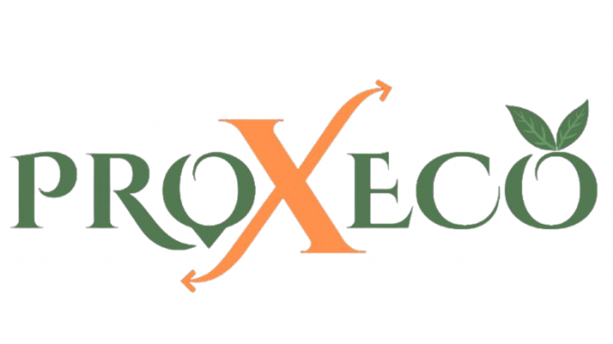

En production
2 produits
Studio indépendant. On code, on déploie, on opère nos propres produits. On sait ce que ça coûte de tenir une app à 99,9 % — et on l'applique aussi aux vôtres. Mobile, web, ERP, IA sur mesure.
WABAYTECH conçoit, développe et opère ses propres logiciels en production. La même discipline, la même équipe et la même rigueur quand nous accompagnons nos clients.
Deux produits propriétaires, lancés et opérés au quotidien. La meilleure preuve de ce que nous savons faire : livrer du logiciel qui tient en production, pas seulement une démo.

Trois espaces parfaitement intégrés : acheteur, vendeur, livreur — une expérience pensée pour chaque rôle.
VECTOR transforme une instruction en logiciel testé et déployé : vous gardez la stratégie, il prend la charge technique.
Tout ce qu'il faut pour transformer une idée en logiciel en production. De la première ligne de code au monitoring 24/7.
Apps natives iOS et Android. Paiements sécurisés, notifications push, login biométrique. Soumission App Store et Google Play prises en charge. De l'idée à votre première version en 4 à 8 semaines.
Site rapide, optimisé performance et référencement, parfaitement responsive. Chaque évolution prévisualisée avant publication — vous validez en un clic.
Assistants intelligents, recherche augmentée sur vos données, automatisation de processus. Pensé pour s'intégrer aux outils que vos équipes utilisent déjà.
Tableau de bord opérationnel sur mesure. Gestion des rôles, traçabilité des actions, exports comptables, indicateurs temps réel. Pensé pour le quotidien de vos équipes.
Mises en production automatisées, monitoring 24/7, audits sécurité, conformité RGPD, sauvegardes chiffrées, rotation des secrets. La discipline opérationnelle qui évite les incidents.
Diagnostic de votre logiciel existant : qualité, architecture, performance, sécurité. Rapport actionnable et plan de remédiation chiffré, livré sous 5 jours.
Trois principes qui guident chaque décision — du premier prototype à la version en production.
Veille technologique permanente. Nous adoptons les meilleures pratiques et frameworks dès qu'ils sont stables — pas un an après tout le monde. Vous bénéficiez d'un produit construit avec ce qui se fait de mieux aujourd'hui.
Code rigoureusement typé, tests automatisés, monitoring opérationnel dès le premier jour. Performance, accessibilité et sécurité contrôlées à chaque mise en production — pas reléguées en fin de projet.
Pas de prestataire qui disparaît après livraison. Nous opérons nos propres produits — nous comprenons ce que ça veut dire de tenir une app en production.
Pas de waterfall, pas de « découverte » qui dure 3 mois. Cycle court, livrables chaque semaine, démo client tous les 14 jours. Vous gardez le contrôle.
Étude de votre besoin, validation des cas d'usage, périmètre du premier produit défini ensemble. Livrable : une feuille de route chiffrée, étape par étape.
Modèle de données, pipeline de livraison, charte graphique, identité produit. On pose les fondations avant la première fonctionnalité — c'est ce qui permet d'accélérer ensuite.
Sprints de 2 semaines, démo client à chaque cycle. Chaque modification visible sur une URL de prévisualisation. Vos retours intégrés en moins de 24 h.
Publication App Store et Google Play, mise en place du monitoring, tableaux de bord opérationnels, formation de vos équipes. Suivi technique de 90 jours inclus.
Je n'ai pas créé WABAYTECH pour empiler des projets clients. Je l'ai créée parce que je voulais coder des produits qui tournent, et apprendre, en les opérant, ce que peu d'agences savent vraiment : ce que ça coûte de tenir une app en production. Aujourd'hui j'applique cette discipline à chaque mission qu'on accepte.
Nous nous appuyons sur les standards de l'industrie et travaillons avec les acteurs reconnus du paiement, du mobile et de l'intelligence artificielle.
30 min d'audit gratuit. Chiffrage clair sous 48 h. Démarrage en 2 semaines.
Envoyez-nous votre idée en deux lignes — projet, échéance, budget approximatif. On revient sous 24 h ouvrées avec un premier avis et les prochaines étapes.